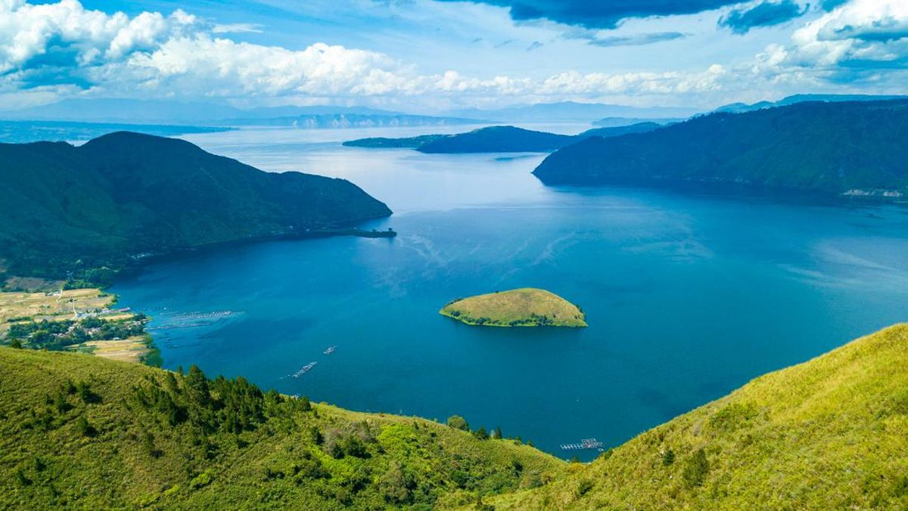

Sejarah

Danau Toba di Sumatera Utara, Indonesia, adalah danau vulkanik
terbesar di Asia Tenggara, terbentuk sekitar 74.000 tahun lalu
akibat letusan supervulkan yang merupakan salah satu yang terbesar
dalam sejarah bumi. Letusan ini menciptakan kaldera besar yang
kemudian terisi air dan menjadi Danau Toba, dengan Pulau Samosir di
tengahnya, yang juga terbentuk dari aktivitas vulkanik. Letusan
tersebut memiliki dampak global signifikan, menyebabkan "musim
dingin vulkanik" yang mempengaruhi iklim dan menurunkan populasi
manusia secara drastis.
Saat ini, Danau Toba adalah destinasi wisata utama di Indonesia,
terkenal dengan keindahan alam, air jernih, dan kebudayaan Batak
yang kaya. Wisatawan dapat menikmati berbagai aktivitas seperti
berenang, berperahu, dan menjelajahi Pulau Samosir. Pemerintah
Indonesia terus mengembangkan infrastruktur pariwisata di kawasan
ini untuk menarik lebih banyak pengunjung, sembari menjalankan upaya
konservasi untuk melindungi ekosistem dan keindahan Danau Toba bagi
generasi mendatang.
Legenda
Legenda Danau Toba bercerita tentang seorang pemuda bernama Toba
yang hidup sebagai petani. Suatu hari, dia menangkap seekor ikan mas
yang berubah menjadi seorang wanita cantik. Wanita tersebut
mengungkapkan bahwa dia adalah seorang putri yang dikutuk menjadi
ikan. Toba dan wanita itu kemudian menikah dengan satu syarat: Toba
tidak boleh mengungkit asal-usul istrinya sebagai ikan. Mereka hidup
bahagia dan memiliki seorang anak laki-laki bernama Samosir.
Namun, Samosir tumbuh menjadi anak yang nakal dan suatu hari, dalam
kemarahan, Toba melanggar janjinya dengan memarahi Samosir dan
menyebutnya sebagai anak ikan. Istrinya yang mendengar ini sangat
kecewa dan marah. Dia kemudian memutuskan untuk kembali ke bentuk
aslinya dan memanggil air dari sungai untuk menggenangi desa mereka,
menciptakan Danau Toba. Samosir selamat dan pulau tempat ia berada
kemudian dikenal sebagai Pulau Samosir, di tengah Danau Toba.
Geografis
Danau Toba terletak di provinsi Sumatera Utara, Indonesia, dengan
koordinat sekitar 2°35' LU hingga 99°9' BT. Danau ini memiliki
panjang sekitar 100 kilometer dan lebar 30 kilometer, dengan
kedalaman mencapai 505 meter, menjadikannya danau terbesar di
Indonesia dan Asia Tenggara. Di tengah danau terdapat Pulau Samosir,
yang memiliki luas sekitar 630 km² dan berada pada ketinggian 1.000
meter di atas permukaan laut, terhubung dengan daratan Sumatera
melalui tanah genting sempit. Danau ini terbentuk dalam kaldera
Wisata
Danau Toba merupakan salah satu destinasi wisata utama di Indonesia
yang menawarkan berbagai kegiatan menarik bagi para pengunjung.
Salah satu daya tarik utamanya adalah Pulau Samosir, pulau vulkanik
di tengah danau yang dapat dijangkau dengan feri.
SiBea-Bea
Bukit Sibea-bea adalah destinasi religi yang terletak di Harian
Boho, Kabupaten Samosir, Sumatera Utara, Indonesia. Daya tarik
utama objek wisata ini adalah hadirnya sebuah patung Yesus di
puncak bukit Sibea-bea. Selain itu, Selain memiliki Patung Yesus,
Bukit Sibea-bea Samosir merupakan kawasan wisata bukit yang ditata
modern, sangat khas dengan jalannya yang berliku-liku tetapi
nyaman untuk dilintasi. Tidak hanya itu, bukit ini juga dikenal
karena indahnya panorama alam Toba di ketinggian 1.021 meter di
atas permukaan laut.
Bukit Holbung
Memiliki beberapa teleskop, antara lain, Refraktor Ganda Zeiss,
Schmidt Bimasakti, Refraktor Bamberg, Cassegrain GOTO, dan
Teleskop Surya. Refraktor Ganda Zeiss adalah jenis teleskop
terbesar untuk meneropong bintang. Benda ini diletakkan pada atap
kubah sehingga saat teropong digunakan, atap tersebut harus
dibuka. Observatorium Bosscha boleh dikunjungi oleh siapapun,
tanpa tiket. Namun, bagi yang ingin menggunakan teleskop Zeiss,
wajib mendaftarkan diri. Untuk instansi atau lembaga pendidikan,
diberikan jadwal hari Selasa sampai Jumat. Sementara itu,
kunjungan individu dibuka setiap hari Sabtu.
Sipinsur
Geosite Sipinsur adalah sebuah taman atau kawasan wisata alam di
tepian Danau Toba, tepatnya di desa Pearung, kecamatan Paranginan,
Kabupaten Humbang Hasundutan, provinsi Sumatera Utara,
Indonesia.Di Geosite Sipinsur ini, pengunjung dapat melihat
sekitar Danau Toba. Geosite Sipinsur berada di ketinggian 1.213
mdpl, tepat di punggung Bukit Barisan.
Kuliner
Danau Toba bukan hanya menawarkan keindahan alam yang menakjubkan,
tetapi juga ragam kuliner khas yang menggugah selera. Berikut adalah
beberapa makanan khas yang wajib dicoba ketika berkunjung ke Danau
Toba.
Naniura

Naniura adalah hidangan ikan mentah khas Batak yang sering disebut
sebagai "sushi Batak". Ikan yang biasanya digunakan adalah ikan
mas, yang direndam dalam campuran bumbu yang terdiri dari asam
jungga (sejenis jeruk khas Batak), bawang merah, bawang putih,
kemiri, dan rempah-rempah lainnya. Proses marinasi ini membuat
ikan matang secara kimiawi tanpa perlu dimasak, menghasilkan rasa
yang unik dan segar.
Arsik

Arsik adalah hidangan ikan mas yang dimasak dengan bumbu kuning
khas Batak. Bumbu tersebut terdiri dari bawang merah, bawang
putih, kunyit, lengkuas, dan andaliman (merica Batak). Ikan
dimasak hingga bumbunya meresap sempurna, menghasilkan rasa yang
kaya dan aroma yang menggoda.
Saksang

Saksang adalah hidangan daging, biasanya babi atau anjing, yang
dimasak dengan darah hewan tersebut dan bumbu khas Batak seperti
andaliman, ketumbar, dan rempah lainnya. Hidangan ini sering
disajikan dalam upacara adat dan perayaan khusus.